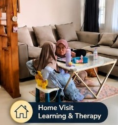
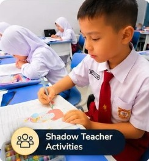

Pilihan Program & Layanan Pembelajaran
Temukan program pendidikan yang komprehensif dan dirancang khusus sesuai dengan kebutuhan perkembangan anak Anda.

Private Tutoring
Pendampingan belajar privat personal di rumah atau online untuk menguasai materi sekolah secara intensif.

Shadow Teacher
Pendamping khusus di sekolah reguler untuk membantu siswa mengikuti proses belajar & interaksi sosial.

Special Needs Education
Program bagi Anak Berkebutuhan Khusus dengan pendekatan kurikulum individual (IEP) yang sabar & teruji.

Calistung Program
Belajar membaca, menulis, dan berhitung dengan metode interaktif, menyenangkan, serta ramah anak.

English & Language Program
Pengembangan kemampuan komunikasi bahasa Inggris dan bahasa asing lainnya secara aktif dan aplikatif.

Cambridge & International
Bimbingan khusus untuk kurikulum internasional (Cambridge/IB) guna mendukung standar studi global.

Extracurricular Program
Berbagai kegiatan ekstrakurikuler terarah untuk menggali hobi, kreativitas, dan bakat minat peserta didik.

Skill Development
Pelatihan peningkatan keterampilan lunak (soft skills) dan kecakapan hidup guna menunjang masa depan anak.